SUPERN TURAL
Добро пожаловать в мир охотников, ангелов и демонов
CAST AND CREW
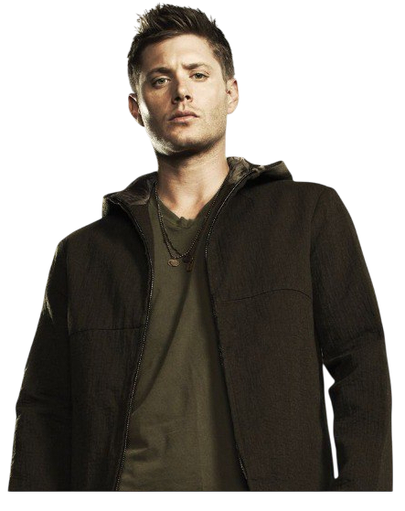
DEAN WINCHESTER
Старший из братьев‑охотников: действует быстро, полагается на опыт и интуицию, ценит семью превыше всего.
Сила — верность и готовность идти до конца; слабость — страх утраты и цена, которую он согласен платить.
Статус: Жив • Первое появление: S1E1
«Я не хочу жить без тебя.»

SEASONS
KEY EVENTS
LOCATIONS
ДОМ ВИНЧЕСТЕРОВ
Лавровая улица, Лоуренс, Канзас
Это место, где началась вся история. Именно здесь в 1983 году Мэри Винчестер была убита Азазелем, а Дин увидел это из колыбели Сэма. Хотя братья провели в этом доме мало времени, он остаётся для них символом утраченного детства и обещания «когда-нибудь вернуться».
Ключевые события:
• Смерть Мэри Винчестер
• Первое появление Азазеля
• Возвращение братьев в пилотной серии
• Финальная сцена сериала — Импала в музее рядом с домом
• Смерть Мэри Винчестер
• Первое появление Азазеля
• Возвращение братьев в пилотной серии
• Финальная сцена сериала — Импала в музее рядом с домом
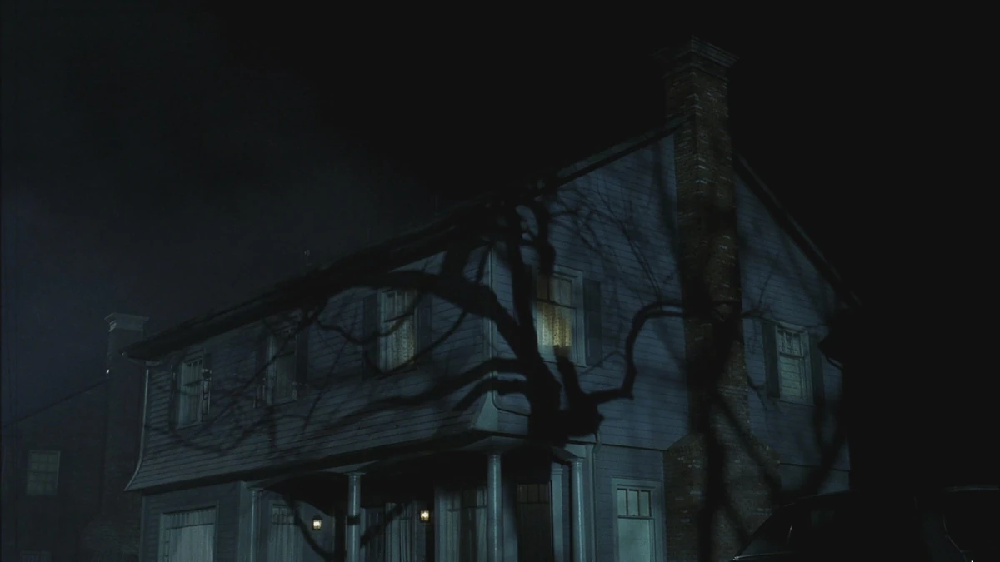
ТЮРЬМА ЛЮЦИФЕРА
Глубины земли, безымянное место
Это крохотная клетка в недрах Ада, где Люцифер был заточён на тысячелетия. Место мрачное, пустое, без времени. Именно сюда в финале сериала уходит Джек — чтобы стать новым тюремщиком и держать Тьму под замком.
Ключевые события:
• Заточение Люцифера после Апокалипсиса
• Попытка Сэма удержать Люцифера внутри себя
• Финал: Джек становится стражем
• Заточение Люцифера после Апокалипсиса
• Попытка Сэма удержать Люцифера внутри себя
• Финал: Джек становится стражем
ДОМ БОББИ СИНГЕРА
Сиу-Сити, Южная Дакота
Для Дина и Сэма дом Бобби — второй дом. Здесь хранятся тысячи книг, артефактов и знаний об охоте. Это место мудрости, поддержки и отцовской заботы. Даже после смерти Бобби его дом остаётся святыней для братьев.
Ключевые события:
• Исследование мифологии и заклинаний
• Укрытие во время Апокалипсиса
• Использование дома как базы в поздних сезонах
• Исследование мифологии и заклинаний
• Укрытие во время Апокалипсиса
• Использование дома как базы в поздних сезонах
ЧИСТИЛИЩЕ
Подземный лабиринт
Это древнее место, где были заперты Левиафаны — сущности, созданные до ангелов и демонов. Печать напоминает тюрьму, спрятанную под ледником. Её разрушение в 7 сезоне выпустило на Землю новую угрозу — технологическое зло.
Ключевые события:
• Разрушение печати Кастиэлем
• Появление Левиафанов на Земле
• Заражение Дина кровью Левиафанов
• Разрушение печати Кастиэлем
• Появление Левиафанов на Земле
• Заражение Дина кровью Левиафанов
ИМПАЛА
Chevrolet Impala 1967 года
Это не просто машина — это святая святых мира «Сверхъестественного». В ней братья провели тысячи миль, спасали друг друга, пили пиво и слушали «Carry On Wayward Son». Для Дина это последний связующий элемент с детством и ощущением свободы.
Ключевые события:
• Подарок от отца Джона
• Уничтожение и восстановление
• Перевозка душ, артефактов и тел
• Финал: Импала в «Музее сверхъестественного»
• Подарок от отца Джона
• Уничтожение и восстановление
• Перевозка душ, артефактов и тел
• Финал: Импала в «Музее сверхъестественного»
БУНКЕР БОББИ
Лебанон, Канзас
Укрепленное убежище из железа, созданное для защиты охотников от сверхъестественного в сериале «Сверхъестественное», оснащенное демоническими ловушками (включая пентаграмму на полу и вентиляторе), енохианскими символами на стенах, оружейным шкафом, запасом святой воды и солью, а также мебелью и транзисторным радио
Ключевые события:
• Обнаружение бункера
• Подготовка к битвам с Тьмой
• Штаб для войны с альтернативными мирами
• Обнаружение бункера
• Подготовка к битвам с Тьмой
• Штаб для войны с альтернативными мирами
ВРАТА АДА
Колорадо, США
Огромная шахта в Колорадо, ведущая прямо в Ад. Именно здесь Винчестеры и их союзники пытались запечатать врата, принимая тяжёлые решения и жертвуя невинными, чтобы остановить прорыв демонов на Землю.
Ключевые события:
• Пробуждение Желтоглазого демона
• Закрытие врат ценой человеческих жертв
• Массовый прорыв демонов в последующих сезонах
• Пробуждение Желтоглазого демона
• Закрытие врат ценой человеческих жертв
• Массовый прорыв демонов в последующих сезонах
ПРИДОРОЖНАЯ ЗАКУСОЧНАЯ ХАРВЕЛЛОВ
Дорога, Средний Запад
Знаменитый бар Джо и Эллен Харвелл — центр охотничьего сообщества. Здесь собирались охотники, обменивались информацией, пили и планировали. После трагедии стал легендой.
Ключевые события:
• Встречи охотников
• Смерть Эллен и Джо
• Появление Кроули как завсегдатая
• Встречи охотников
• Смерть Эллен и Джо
• Появление Кроули как завсегдатая
‹
›
QUOTES
“I DON’T WANT TO LIVE WITHOUT YOU.”
«Я не хочу жить без тебя.»
Сезон 5, Эпизод 22
“LOVE IS WEAKNESS.”
«Любовь — это слабость.»
Сезон 11, Эпизод 10
“YOU’RE MY FAMILY.”
«Вы — моя семья.»
Сезон 9, Эпизод 1
“I’M NOT A HERO. I’M THE GUY WHO SAVES THE HERO.”
«Я не герой. Я тот, кто спасает героя.»
Сезон 5, Эпизод 19
“FAMILY DON’T END WITH BLOOD.”
«Семья — это не только кровные узы.»
Сезон 13, Эпизод 23
“I’M NOT OKAY WITH THIS.”
«Мне это не нравится.»
Сезон 2, Эпизод 20
“I’M NOT A GOOD MAN. I’M JUST NOT VERY BAD.”
«Я не добрый. Я просто не очень плохой.»
Сезон 5, Эпизод 18
“I DON’T BELIEVE IN GOD, BUT I’LL KILL FOR SAM.”
«Я не верю в Бога, но готов умереть за Сэма.»
Сезон 1, Эпизод 1
“I’M NOT AFRAID TO DIE. I’M AFRAID I WON’T GET THERE.”
«Я не боюсь умереть. Я боюсь не успеть.»
Сезон 2, Эпизод 17
“I’M NOT A BAD GUY. I’M JUST NOT VERY GOOD.”
«Я не злой. Я просто не очень добрый.»
Сезон 1, Эпизод 18
“I’M NOT A HERO. I’M JUST A GUY WHO WANTS TO HELP.”
«Я не герой. Я просто парень, который хочет помочь.»
Сезон 7, Эпизод 1
“I’M NOT A BAD PERSON. I’M JUST NOT VERY GOOD.”
«Я не плохой человек. Я просто не очень хороший.»
Сезон 3, Эпизод 8
“I’M NOT A GOOD MAN. I’M JUST NOT VERY BAD.”
«Я не добрый. Я просто не очень плохой.»
Сезон 4, Эпизод 15
“I’M NOT A BAD GUY. I’M JUST NOT VERY GOOD.”
«Я не злой. Я просто не очень добрый.»
Сезон 3, Эпизод 3
“I’M NOT A HERO. I’M JUST A GUY WHO WANTS TO HELP.”
«Я не герой. Я просто парень, который хочет помочь.»
Сезон 6, Эпизод 10
CREATURES
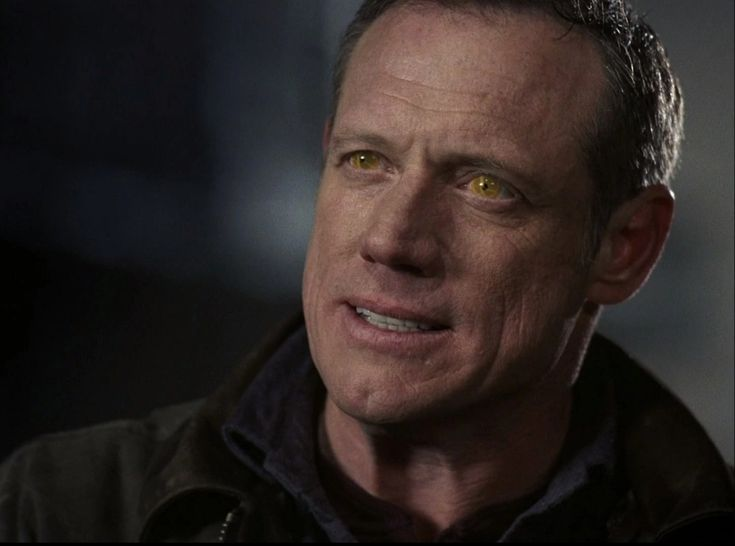
ДЕМОН
Падшие души, заключённые в тела людей. Немогут врать, чёрные или красные глаза в зависимости от ранга. Служат аду, но часто действуют из личной выгоды.
СЛАБОСТИ
- Соль
- Железная цепь
- Изгнание латинской молитвой
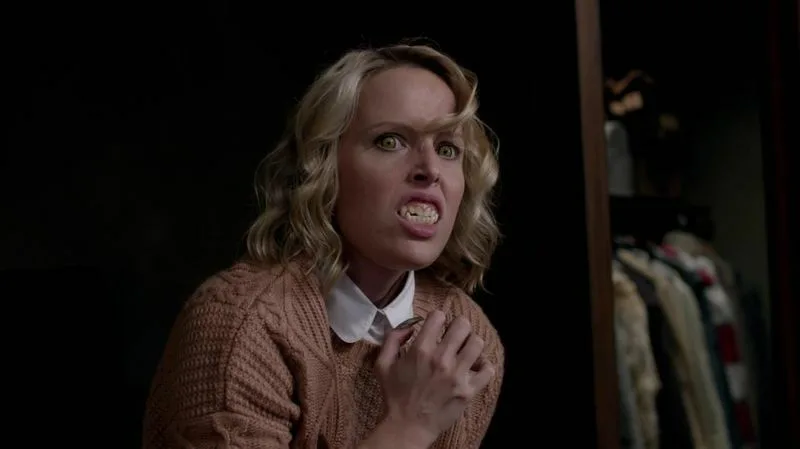
ВЕРВОЛЬФ
Человек, превращающийся в зверя при полной луне. Передаётся через укус. Жесток, быстр и почти неуязвим в звериной форме.
СЛАБОСТИ
- Серебряная пуля
- Серебряный нож
- Уничтожение «родоначальника» стаи
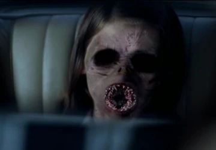
ПОДМЕНЫШ
Сверхъестественное существо, подменяющее человеческого ребёнка в колыбели. Питается жизненной энергией семьи через скрытую связь с ребёнком.
СЛАБОСТИ
- Железо
- Соль на пороге
- Возвращение настоящего ребёнка
![[translate:Штрига]](assets/images/creatures/striga.jfif)
ШТРИГА
Албанское существо, питающееся жизненной силой детей. Проникает ночью в дома в облике старика или старухи и высасывает дыхание из лёгких спящих малышей, обрекая их на смерть.
СЛАБОСТИ
- Серебряная пуля
- Соль на пороге
- Молитва / ритуал изгнания
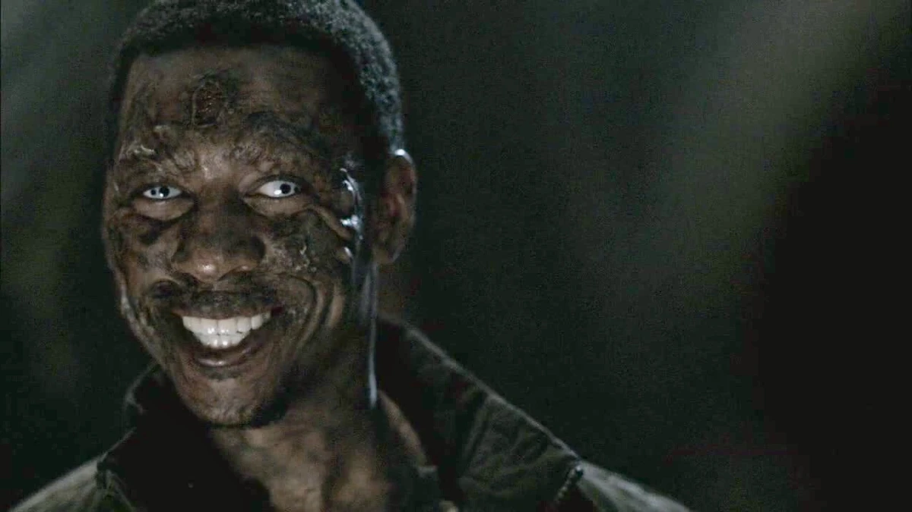
АРАХНА
Древняя демоница в облике женщины-паука. Заманивает жертв в ловушки, высасывает их жизненную силу и опутывает паутиной душу, превращая человека в куклу.
СЛАБОСТИ
- Огонь
- Соль
- Клинок из костей Кали
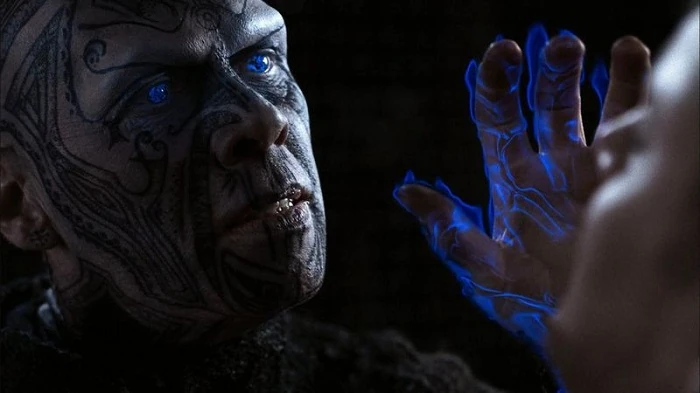
ДЖИНН
Древнее существо, исполняющее желания в обмен на цену души. Погружает жертву в иллюзорный мир, пока в реальности высасывает её жизненную силу.
СЛАБОСТИ
- Серебряный нож
- Соль
- Разрушение сосуда-тюрьмы
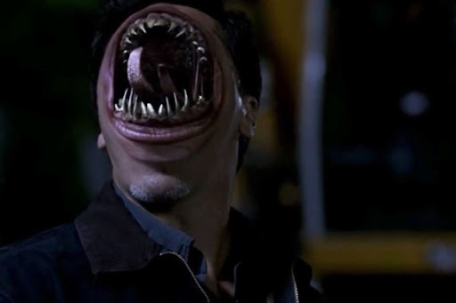
ЛЕВИАФАН
Древняя сила, старше ангелов и демонов. Питаются человеческой кровью, принимают любой облик и фактически неуязвимы для обычного оружия.
СЛАБОСТИ
- Специальный клинок Левиафан
- Кровь трёх существ, смешанная в ритуале
- Удаление головы / разделение тела и крови
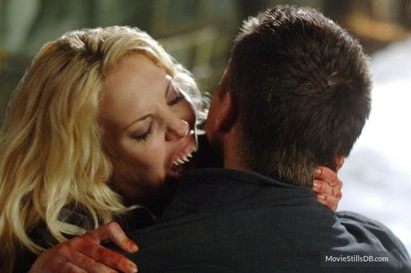
ВАМПИРЫ
Мертвецы, пьющие кровь живых. Передают свою природу через укус, живут стаями и избегают прямого солнечного света.
СЛАБОСТИ
- Обезглавливание
- Дерево (кол)
- Серебро и солнечный свет
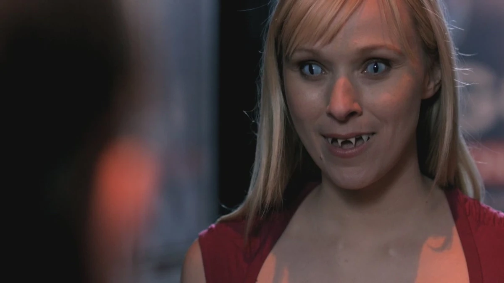
ВЕТАЛЫ
Индийские демоны, обитающие в трупах. Могут вселяться в тела и управлять ими, скрываясь среди живых и подменяя личности.
СЛАБОСТИ
- Специальный ритуал изгнания
- Соль
- Огонь
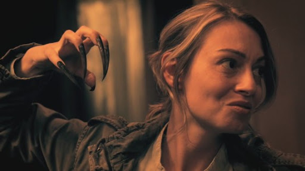
КИЦУНЭ
Японские лисы-демоны, принимающие человеческий облик. Хитры, обманчивы и используют магию и чары, чтобы управлять людьми.
СЛАБОСТИ
- Священные предметы
- Огонь
- Соль и ритуалы очищения
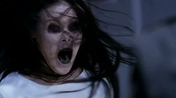
СЕДЗЕ
Древний демон, связанный с болезнью и смертью. Появляется как человек с гниющими ранами и приносит за собой эпидемии и моры.
СЛАБОСТИ
- Священные слова
- Огонь
- Ритуал очищения
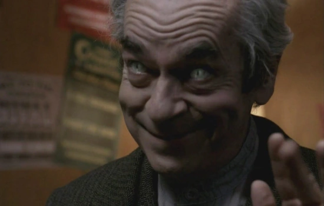
РАКШАСА
Индийский демон, питающийся человеческой плотью. Меняет облик, скрывается среди людей и охотится на одиноких жертв.
СЛАБОСТИ
- Священные предметы
- Огонь
- Специальные ритуалы изгнания
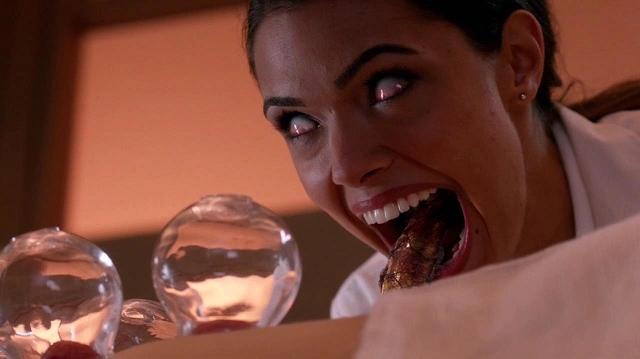
ПИШТАКО
Демон, питающийся страхом и отчаянием. Приходит во тьме, давит психически, лишая жертву надежды и воли к сопротивлению.
СЛАБОСТИ
- Вера и свет
- Священные слова
- Освящённые символы защиты
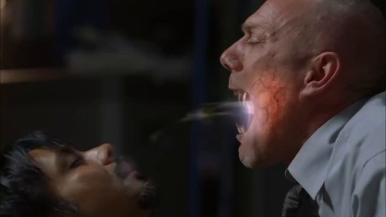
КРОКОТТА
Древнее существо, напоминающее гиену. Имитацией голосов родных и друзей заманивает одиноких путников в засаду и добивает в темноте.
СЛАБОСТИ
- Огонь
- Серебро
- Громкий шум и освещённость
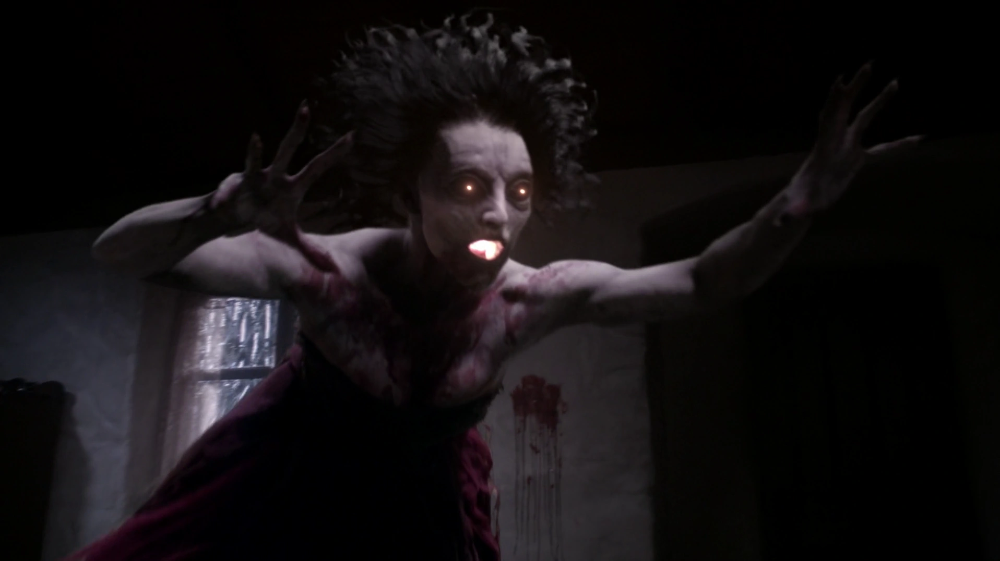
БАНШИ
Ирландская ведьма, предвещающая смерть криком. Её голос вызывает паралич, безумие и может довести до остановки сердца.
СЛАБОСТИ
- Соль
- Священные слова
- Огонь и изгнание ритуалом
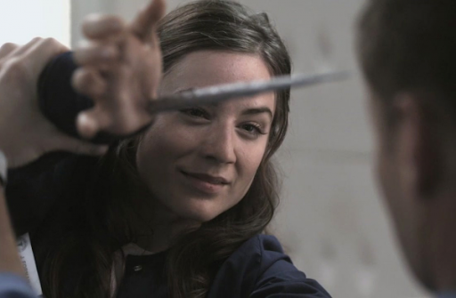
РЭЙФ
Существо, связанное с водой и отражениями. Появляется как притягательный человек, заманивает жертву к воде и утягивает в глубину.
СЛАБОСТИ
- Священные предметы
- Огонь
- Соль
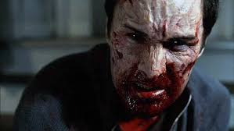
РУГАРУ
Существо, способное принимать облик любого человека. Постепенно теряет контроль и в итоге начинает пожирать человеческую плоть.
СЛАБОСТИ
- Огонь
- Серебро
- Уничтожение до первой «охоты»
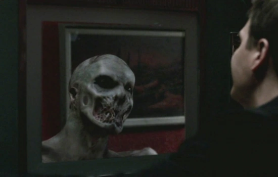
СИРЕНА
Морское существо, заманивающее людей голосом и иллюзиями. Заставляет жертву идти навстречу смерти, пока сама питается её жизненной силой.
СЛАБОСТИ
- Священные слова
- Огонь
- Соль и освящённое оружие
![[translate:Вендиго]](assets/images/creatures/wendigo.avif)
ВЕНДИГО
Каннибал-дух северных лесов. Замораживает жертву взглядом, вызывает неутолимый голод и превращает в себе подобного.
СЛАБОСТИ
- Огонь
- Серебро
- Агавэ
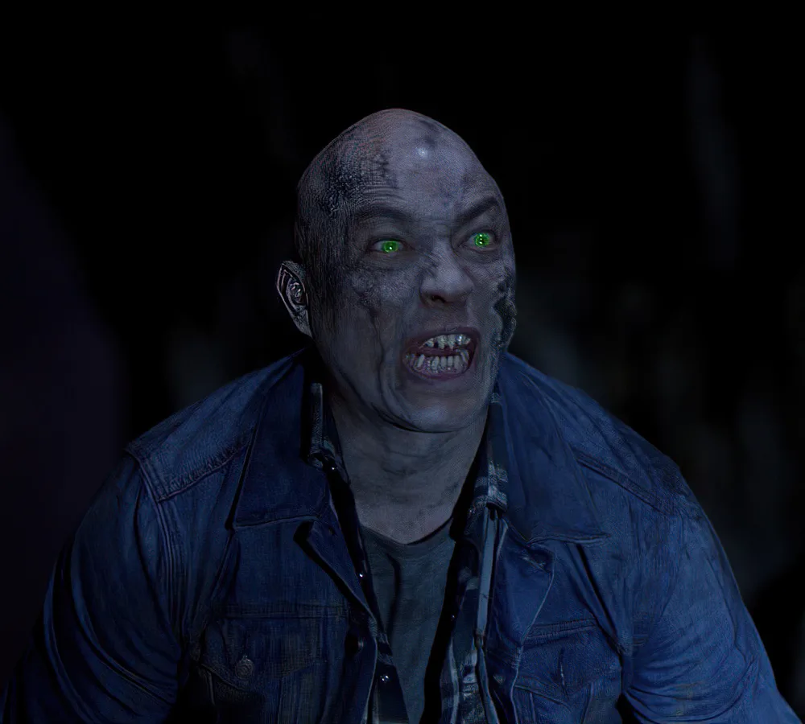
БИСАН
Японский лесной дух с лицом старухи. Заманивает путников песнями, крадёт детей и питается их страхом.
СЛАБОСТИ
- Соль
- Огонь
- Священные зеркала
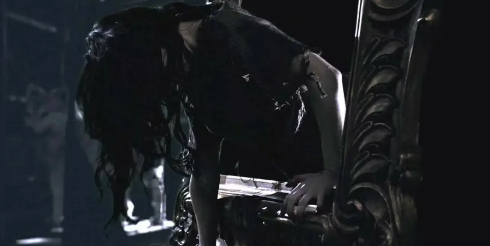
КРОВАВАЯ МЭРИ
Зеркальный дух, вызываемый ритуалом. Вырывает глаза, царапает лицо и утаскивает душу в отражение.
СЛАБОСТИ
- Соль по краям зеркала
- Разбитое зеркало
- Свет
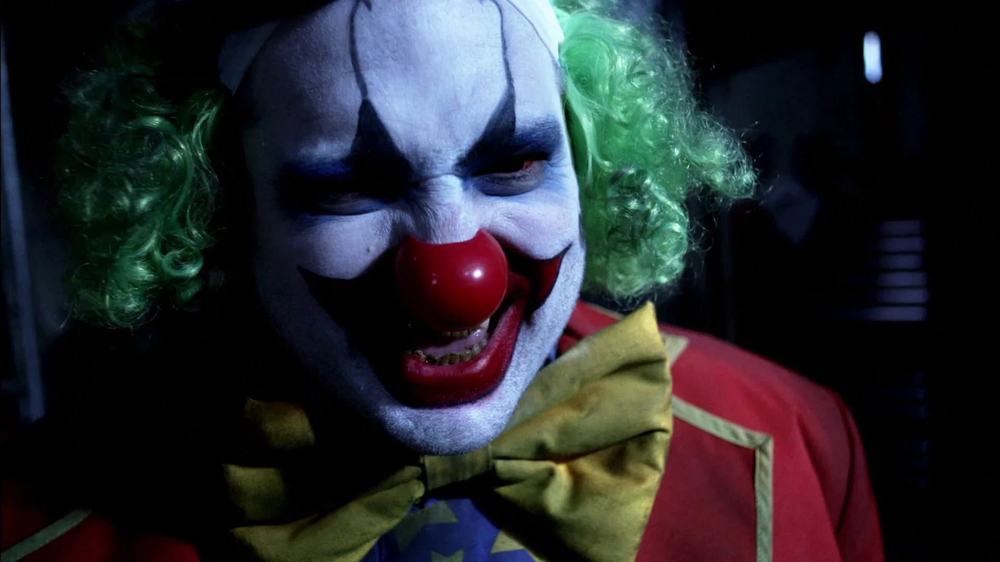
КЛОУН
Шут-убийца из канализации. Телепортируется через стоки, режет детей и оставляет воздушные шары с кровью.
СЛАБОСТИ
- Серебро
- Ритуальное убийство детей
- Огонь
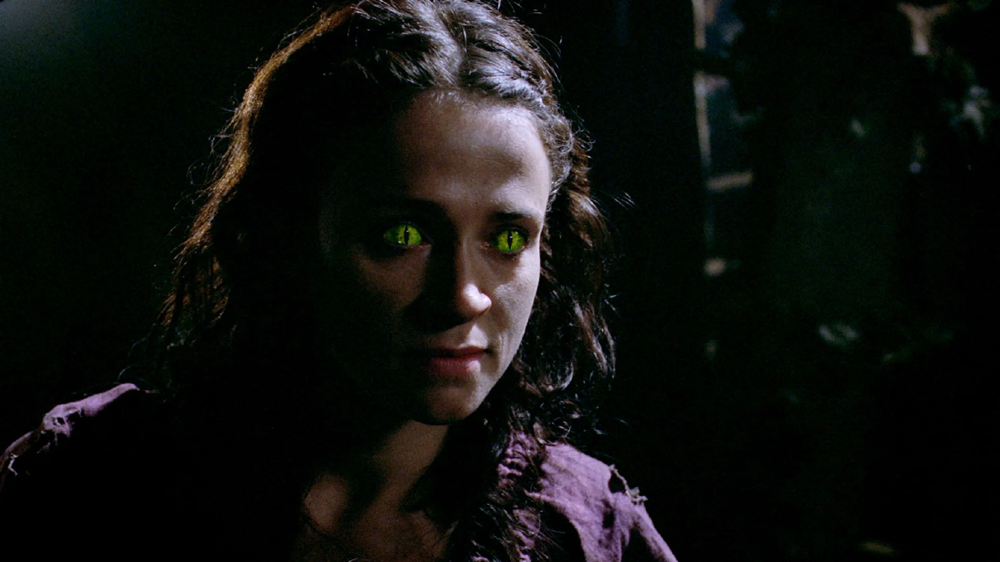
ЛАМИЯ
Змеиная женщина, крадущая детей. Пьёт их кровь, принимает облик матери и заманивает в пещеры.
СЛАБОСТИ
- Серебро
- Железо
- Возвращение детей
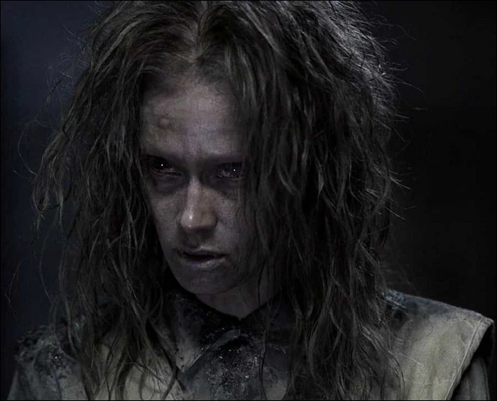
ПРИЗРАК
Душа, привязанная к месту смерти. Замораживает воздух, вызывает галлюцинации и доводит до безумия.
СЛАБОСТИ
- Соль
- Железо
- Завершение незавершённых дел
ABOUT
Этот сайт — дань уважения сериалу «Сверхъестественное», который на 15 лет стал домом для миллионов зрителей. Здесь нет спойлеров без предупреждения, нет сухой энциклопедии — только то, что важно: герои, которые стали семьёй, места, где решались судьбы миров, и слова, которые заставляют сердце биться чаще.
«Сверхъестественное» показало, что даже в самой тёмной ночи можно найти свет — в брате, в друге, в маленькой чёрной Импале на бесконечной дороге.
Спасибо, что ты здесь.
Пусть твой путь будет таким же смелым, как у Дина, мудрым, как у Бобби, и верным, как у Кастиэля.
— Твой проводник по миру сверхъестественного
Спасибо, что ты здесь.
Пусть твой путь будет таким же смелым, как у Дина, мудрым, как у Бобби, и верным, как у Кастиэля.
— Твой проводник по миру сверхъестественного
СЕМЬЯ — ЭТО НЕ ТОЛЬКО КРОВНЫЕ УЗЫ.